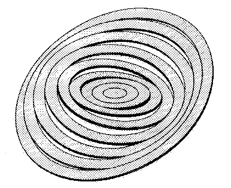
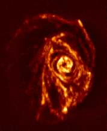

|  | |
| Tilted-ring model of M83 by Rogstad et al. (1974) | |
|  | |
| The H i distribution of M83 as observed more recently with the Parkes telescope and the ATCA (image made by Park et al.). Note that Rogstad et al. saw only a small portion of the H i distribution shown here. |
As such, we do not provide much information for the interested but unexperienced layman (although you are of course invited to browse through our pages). However, we will try to add a generally understandable introduction. Alas, this will probably not happen until a far future.
|
Contents: |
The tilted-ring model is a very successful approach to describe the kinematics (and the morphology) of rotating disks (e.g. spiral galaxies) as observed in spectral line experiments. Various software packages exist that anable the user to automatically fit a tilted-ring models to (wide-field) spectroscopic observations of a tracer material in rotating disks. One class, fit algorithms to velocity fields, has its shortcomings in the systematic bias introduced by beam smearing and a limitation to certain gometric properties of the investigated targets. The second class, direct fitting routines to data cubes, while applicable to much more general cases, is usually too slow to be useful and the implementation too simplistic.
The TiRiFiC goals are:
The code and its description are available on these www pages. We cordially invite you to provide feedback and suggestions.
For a detailed description, please follow the links on the left (or here):
| HOME | A brief introduction to TiRiFiC. |
| Input and Syntax | General syntax and input methods. |
| Modelling Strategy | How TiRiFiC constructs and simulates a model observation. |
| Model Geometry | The basic model geometry. |
| Model Fitting | Implemented optimisation schemes. |
| Output | Possibilities for the output. |
| Parameter Index | All parameters in a table (with links). |
| Examples | Examples to exercise TiRiFiC. |
| GUI | A graphical user interface to edit default files. Description and download. |
| Bugs and Development | A list of bugs that still need to be removed, known issues, and future plans. |
| Download and Installation | Download and installation guide, TiRiFiC source code. |
| Contact and Feedback | Use this link! |
| Credits | Who wrote TiRiFiC and how to reference it. |
The tilted-ring model has been introduced by Rogstad et al. (1974) as a possibility to describe the neutral gaseous disk of the galaxy Messier 83. Simulating the observed H i (neutral-Hydrogen) distribution of the galaxy as a set of circular, concentric, but mutually inclined, rotating rings, they were able to show that M83 most likely has a warped disk (although people were not ready to believe yet; the undisputed, or only slightly disputed, proof of the existence warps in the outer H i layers of spiral galaxies was provided later by Sancisi (1976)). Today we know that most galactic disks exhibit warps once the restoring gravitational forces of the inner disk become weak at large radii, which is why the tilted-ring model has become the favourite kinematical model for galactic H i disks (since H i usually extend far beyond the massive inner stellar disk). Also TiRiFiC (after nearly 40 years) is a software to describe a galaxy within that framework.
There are basically two classes of techniques to construct a tilted-ring model from a given intensity distribution (the intensity I(ξ, η, λ) = I(ξ, η, ν(λ)) is the brightness of a source in dependence of the position on the sky (ξ, η) and the frequency ν or the wavelength λ and with that, via the Doppler shift, of the recession velocity V(ν): I(ξ, η, ν)= I(ξ, η, V(ν)) ; the representation of the observed intensity projected onto a 3d-grid, i.e. the result of a wide-field spectroscopic observation, is called a "data cube").
One class works by first constructing a so-called velocity field, a map representing the mid-plane recession velocity of the disk, to then fit a tilted-ring model to this kinematical map. This technique has been explored in detail and expanded by Begemann (1987) (rotcur, implemented in GIPSY), Schoenmakers (1999) (reswri, implemented in GIPSY), Spekkens & Sellwood (2007) (diskfit), Krajnovic (2006) (KINEMETRY) and others. The advantages of this method are (for a detailed discussion see e.g. Józsa et al. 2007):
The disadvantages of this method are (for a detailed discussion see e.g. Józsa et al. 2007):
The other class of tilted-ring parametrisation techniques consists of constructing parametrised model datacubes, simulating observations, which are then compared directly to the observations. The most commonly used routine of that group so far is the GIPSY routine galmod in combination with a convolution task. galmod has no optimisation loop, such that models are fitted "by eye". Extensions of galmod have been used to account for the vertical (kinematical) fine structure of galaxies (Fraternali et al. 2002, Heald et al. 2006). An automated optimisation of parametrised data cubes has been implemented by Corbelli & Schneider (1997) and later by Fiege et al. (GalAPAGOS) and Józsa et al. (2007) (TiRiFiC, this web page). The advantages of this method are (for a detailed discussion see e.g. Józsa et al. 2007):
The disadvantages of this method are (for a detailed discussion see e.g. Józsa et al. 2007):
TiRiFiC is an attempt to provide a method to automatically fit an extended tilted-ring model directly to a data cube. The goals are to overcome the drawbacks of fitting methods using velocity fields and to ultimately provide a tool to automatise galaxy parametrisations in large spectroscopic surveys. Both WNSHS with Apertif at the WSRT and WALLABY with the ASKAP) are projects, we are heavily involved with. But it is also our aim to provide a useful tool for the everyday use of the common (H i-) astronomer. As outlinedlined above, for a direct-fit method it is necessary:
Especially the first two points have been addressed to some extent, while the third point is currently being investigated in an experimental phase (you are invited to take part). In this context, again, we cordially invite you to provide feedback and suggestions.
For a detailed description, please follow the links on the left (or here):
| HOME | A brief introduction to TiRiFiC. |
| Input and Syntax | General syntax and input methods. |
| Modelling Strategy | How TiRiFiC constructs and simulates a model observation. |
| Model Geometry | The basic model geometry. |
| Model Fitting | Implemented optimisation schemes. |
| Output | Possibilities for the output. |
| Parameter Index | All parameters in a table (with links). |
| Examples | Examples to exercise TiRiFiC. |
| GUI | A graphical user interface to edit default files. Description and download. |
| Bugs and Development | A list of bugs that still need to be removed, known issues, and future plans. |
| Download and Installation | Download and installation guide, TiRiFiC source code. |
| Contact and Feedback | Use this link! |
| Credits | Who wrote TiRiFiC and how to reference it. |